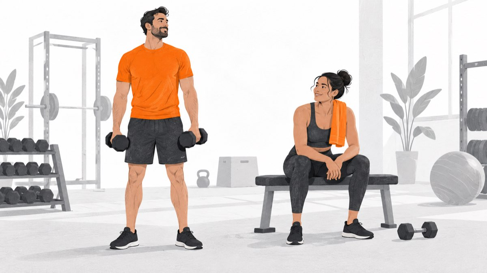
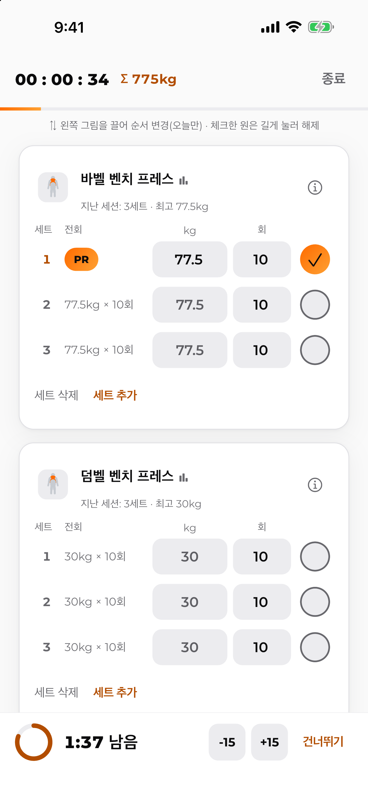
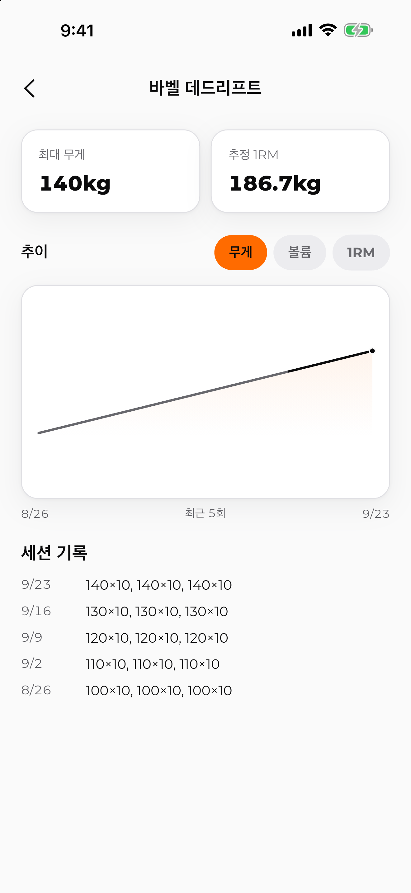

지난 기록은 미리.
지난 세션의 무게와 횟수가 채워져 있어요. 그대로라면 완료만 탭하고, 바뀌었다면 숫자만 고쳐요.
EVERY SET, SIMPLY.
지난 기록은 미리 채우고.세트가 끝나면 체크 한 번.
기록부터 휴식까지, ASCEND와 함께.
iPhone · iOS 15 이상
Android는 준비 중이에요

현재 모든 기능 무료
광고 없는 운동 시간
첫 로그인 후 오프라인 이용
MADE FOR YOUR WORKOUT.
숫자를 입력하는 시간은 줄이고,
오늘의 운동을 차곡차곡 남겨요.
지난 세션의 무게와 횟수가 채워져 있어요. 그대로라면 완료만 탭하고, 바뀌었다면 숫자만 고쳐요.
세트를 체크하면 타이머가 시작돼요. 15초씩 조절하거나, 준비됐다면 건너뛸 수 있어요.
최고 중량, 추정 1RM, 세트 볼륨과 운동별 기록의 추이를 한눈에 살펴봐요.
LESS TAPPING. MORE TRAINING.
운동하는 순간에는 간편하게 기록하고,
운동이 끝나면 쌓여가는 변화를 살펴봐요.
실제 앱 화면 · iPhone 라이트 모드


내 루틴을 간편하게 공유하고,
받은 루틴은 미리 살펴본 뒤 가져올 수 있어요.
원본 기록은 내 기기에 저장돼요.
로그인 후 인터넷에 연결되면 자동 백업하고,
새 기기에서도 같은 계정으로 복원할 수 있어요.
시작하기 전에
최초 로그인에는 인터넷이 필요해요. 이후에는 오프라인으로 운동하고 기록할 수 있어요.
기기의 알림 권한을 허용했다면 휴식 알림을 받을 수 있어요. 휴식 시간은 15초씩 조절하거나 건너뛸 수 있어요.
로그인 후 인터넷에 연결되면 한국 리전에 기록 사본이 자동으로 백업돼요. 새 기기에서 같은 계정으로 로그인하면 복원할 수 있어요.
곧 iPhone에서 만나요. 나의 운동 기록, ASCEND.
iPhone · iOS 15 이상
Android는 준비 중이에요